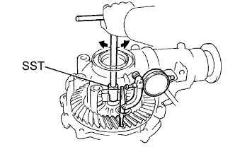
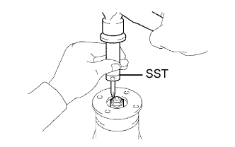
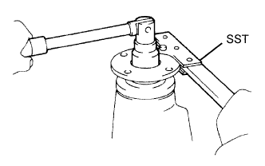
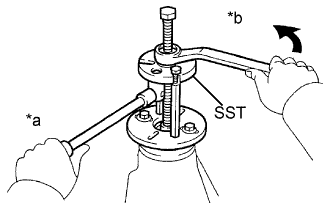
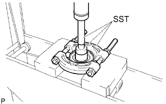
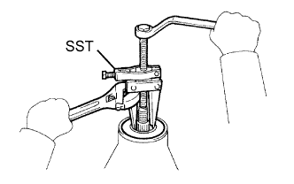

ЧАШКА ПЕРЕДНЕГО ДИФФЕРЕНЦИАЛА В СБОРЕ > РАЗБОРКА |
| 1. ПРОВЕРЬТЕ БОКОВОЙ ЗАЗОР МЕЖДУ ЗУБЬЯМИ В ГЛАВНОЙ ПЕРЕДАЧЕ ДИФФЕРЕНЦИАЛА |
|  |
С помощью SST и индикатора часового типа измерьте боковой зазор между зубьями в главной передаче.
| 2. ПРОВЕРЬТЕ СОЕДИНИТЕЛЬНЫЙ ФЛАНЕЦ ПЕРЕДНЕЙ ВЕДУЩЕЙ ШЕСТЕРНИ В СБОРЕ |
С помощью индикатора часового типа измерьте биение соединительного фланца по вертикали и горизонтали.
| Параметр / Устройство | Заданные условия |
| Вертикальное биение | 0,15 мм (0,00591 дюйма) |
| Горизонтальное биение | 0,15 мм (0,00591 дюйма) |
| *a | Вертикальное биение |
| *b | Горизонтальное биение |
| 3. СНИМИТЕ ТРУБКУ ПЕРЕДНЕГО ДИФФЕРЕНЦИАЛА В СБОРЕ |
Выверните 4 болта с помощью торцевого ключа с головкой "TORX" E14.
С помощью молотка с пластмассовым покрытием выбейте трубку дифференциала.
| 4. СНИМИТЕ САЛЬНИК ВАЛА ПОЛУОСЕВОЙ ШЕСТЕРНИ ДИФФЕРЕНЦИАЛА |
Снимите 2 сальника с помощью SST.
| 5. ОТВЕРНИТЕ ГАЙКУ СОЕДИНИТЕЛЬНОГО ФЛАНЦА ПЕРЕДНЕЙ ВЕДУЩЕЙ ШЕСТЕРНИ |
|  |
Раскерните гайку с помощью молотка и SST.
|  |
Удерживая соединительный фланец с помощью SST, отверните гайку.
| 6. СНИМИТЕ СОЕДИНИТЕЛЬНЫЙ ФЛАНЕЦ ПЕРЕДНЕЙ ВЕДУЩЕЙ ШЕСТЕРНИ В СБОРЕ |
|  |
С помощью SST снимите соединительный фланец.
| *a | Удерживайте |
| *b | Поверните |
| 7. СНИМИТЕ ПРОТИВОПЫЛЕВОЙ КОЛПАК ПЕРЕДНЕГО ДИФФЕРЕНЦИАЛА |
|  |
С помощью SST и пресса выжмите противопылевой колпак.
| 8. СНИМИТЕ САЛЬНИК ЧАШКИ ПЕРЕДНЕГО ДИФФЕРЕНЦИАЛА |
|  |
С помощью SST снимите сальник с чашки дифференциала в сборе.
| 9. СНИМИТЕ МАСЛООТРАЖАТЕЛЬ ВЕДУЩЕЙ ШЕСТЕРНИ ПЕРЕДНЕГО ДИФФЕРЕНЦИАЛА |
Снимите маслоотражатель с ведущей шестерни.
| 10. СНИМИТЕ ПЕРЕДНИЙ КОНИЧЕСКИЙ РОЛИКОВЫЙ ПОДШИПНИК ПЕРЕДНЕЙ ВЕДУЩЕЙ ШЕСТЕРНИ (ВНУТРЕННИЙ) |
С помощью SST снимите передний конический роликовый подшипник (внутренний) с ведущей шестерни.
| 11. СНИМИТЕ ПЕРЕДНИЙ КОНИЧЕСКИЙ РОЛИКОВЫЙ ПОДШИПНИК ПЕРЕДНЕЙ ВЕДУЩЕЙ ШЕСТЕРНИ (НАРУЖНЫЙ) |
 |
С помощью SST снимите передний конический роликовый подшипник (наружный).
| 12. СНИМИТЕ МАСЛОНАКОПИТЕЛЬНОЕ КОЛЬЦО ПЕРЕДНЕГО ДИФФЕРЕНЦИАЛА |
С помощью отвертки и молотка выбейте маслонакопительное кольцо.
| 13. СНИМИТЕ РАСПОРНУЮ ВТУЛКУ ПОДШИПНИКА ВЕДУЩЕЙ ШЕСТЕРНИ ПЕРЕДНЕГО ДИФФЕРЕНЦИАЛА |
 |
Снимите распорную втулку подшипника.
| 14. СНИМИТЕ СЕПАРАТОР ПОДШИПНИКА ДИФФЕРЕНЦИАЛА |
С помощью отвертки снимите штуцер.
Выверните 10 болтов и выбейте сепаратор подшипника полуоси с помощью молотка с пластмассовым покрытием.
| 15. СНИМИТЕ КОРПУС ДИФФЕРЕНЦИАЛА В СБОРЕ |
| 16. СНИМИТЕ ВЕДУЩУЮ ШЕСТЕРНЮ ДИФФЕРЕНЦИАЛА |
| 17. СНИМИТЕ ЗАДНИЙ КОНИЧЕСКИЙ РОЛИКОВЫЙ ПОДШИПНИК ПЕРЕДНЕЙ ВЕДУЩЕЙ ШЕСТЕРНИ (ВНУТРЕННИЙ) |
 |
С помощью SST и пресса снимите задний конический роликовый подшипник (внутренний) и шайбу с ведущей шестерни.
| 18. СНИМИТЕ ЗАДНИЙ КОНИЧЕСКИЙ РОЛИКОВЫЙ ПОДШИПНИК ПЕРЕДНЕЙ ВЕДУЩЕЙ ШЕСТЕРНИ (НАРУЖНЫЙ) |
 |
С помощью латунного стержня и молотка снимите задний конический роликовый подшипник (наружный).
| 19. СНИМИТЕ ПОДШИПНИК КОРПУСА ПЕРЕДНЕГО ДИФФЕРЕНЦИАЛА |
С помощью SST и пресса выжмите подшипник корпуса (наружное кольцо) и шайбу корпуса из сепаратора подшипника.
С помощью SST и пресса выжмите подшипник корпуса (наружное кольцо) и плоскую шайбу из чашки дифференциала.
| 20. СНИМИТЕ КОРОННУЮ ШЕСТЕРНЮ ДИФФЕРЕНЦИАЛА |
Нанесите метки на коронную шестерню и корпус дифференциала.
| *a | Метка |
Выверните 10 установочных болтов коронной шестерни.
 |
Обстучите коронную шестерню молотком с пластмассовым покрытием, чтобы снять ее с корпуса дифференциала.
| 21. СНИМИТЕ ПОДШИПНИК КОРПУСА ПЕРЕДНЕГО ДИФФЕРЕНЦИАЛА |
С помощью SST снимите 2 подшипника корпуса дифференциала (внутренние кольца) с корпуса дифференциала.
| *a | Паз |
| 22. СНИМИТЕ КОРПУС ДИФФЕРЕНЦИАЛА В СБОРЕ |
 |
Раскерните корпус дифференциала с помощью молотка и зубила.
 |
С помощью молотка и бородка с тонким цилиндрическим концом 5 мм выбейте стопорный штифт.
 |
Снимите с корпуса дифференциала детали, показанные на рисунке.
| *1 | Ведущая шестерня дифференциала |
| *2 | Упорная шайба ведущей шестерни дифференциала |
| *3 | Ось сателлита дифференциала |
| *4 | Полуосевая шестерня дифференциала |
| *5 | Упорная шайба полуосевой шестерни |
| 23. ПРОВЕРЬТЕ КОМПЛЕКТ ШЕСТЕРЕН ДИФФЕРЕНЦИАЛА |
Убедитесь, что ведущая и полуосевая шестерни дифференциала не повреждены.
Если ведущая или полуосевая шестерня дифференциала повреждена, замените весь комплект шестерен дифференциала.
| 24. ПРОВЕРЬТЕ КОРПУС ПЕРЕДНЕГО ДИФФЕРЕНЦИАЛА |
Удостоверьтесь, что корпус дифференциала не поврежден.
Если корпус дифференциала поврежден, замените его.
| 25. СНИМИТЕ САЛЬНИК ВАЛА ПОЛУОСЕВОЙ ШЕСТЕРНИ ДИФФЕРЕНЦИАЛА |
Используя SST, выбейте сальник из трубки дифференциала.
| 26. СНИМИТЕ ПРАВЫЙ ВАЛ ПОЛУОСЕВОЙ ШЕСТЕРНИ ДИФФЕРЕНЦИАЛА В СБОРЕ |
 |
С помощью съемника стопорных колец снимите пружинное стопорное кольцо.
Снимите вал полуосевой шестерни с трубки дифференциала.
| 27. СНИМИТЕ ПОДШИПНИК ВАЛА ПРАВОЙ ПОЛУОСЕВОЙ ШЕСТЕРНИ ПЕРЕДНЕГО ДИФФЕРЕНЦИАЛА |
С помощью съемника стопорных колец снимите пружинное стопорное кольцо.
С помощью SST, латунного стержня и пресса выжмите подшипник.